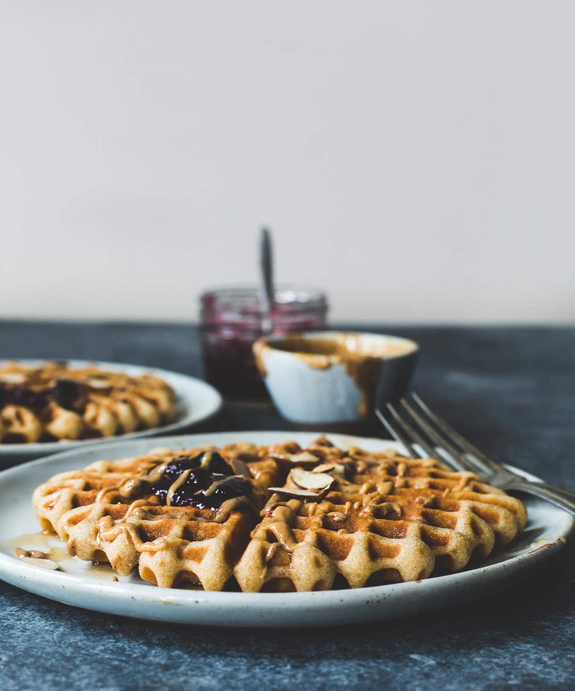

Brown Rice Flour Waffles

Homemade gluten-free waffles made with brown rice flour that are absolutely delicious! They're soft and fluffy on the inside, with crisp, buttery edges
Ingredients
- 102 grams brown rice flour
- 30 grams (1/4 cup) tapioca starch
- 1/4 teaspoon fine salt
- 1 teaspoon baking powder
- 1/2 teaspoon pumpkin pie spice or cinnamon
- 1 teaspoon vanilla extract
- 1 1/2 tablespoons maple syrup
- 1/2 cup plain kefir or buttermilk
- 1 large egg room temperature
- 4 tablespoons butter, melted and cooled
- Almond butter jam and maple syrup to serve
Steps
- Preheat waffle iron to medium high. In a large bowl, whisk together brown rice flour, tapioca starch, salt, baking powder, and pumpkin pie spice.
- In a separate bowl, whisk together vanilla, maple syrup, kefir, and egg until smooth. Whisk these ingredients into the dry, then whisk in the butter until completely combined and smooth.
- Then add one third, or half (if you want really large waffles) of the batter to the waffle iron. As the batter sits it will get really thick - not pourable. It's totally okay (you can add a tablespoon of milk to thin it a bit if you'd like). Just spread it out on in the middle of the iron, like you would cake batter.
- Seal, and let cook until just golden brown. (do not overcook) *I don't rely on the timer on my waffle, instead I open lid to look after a few minutes to see how they are coming along. Repeat two more times to makes additional waffles.
- Then top with almond butter, jam, and maple syrup.